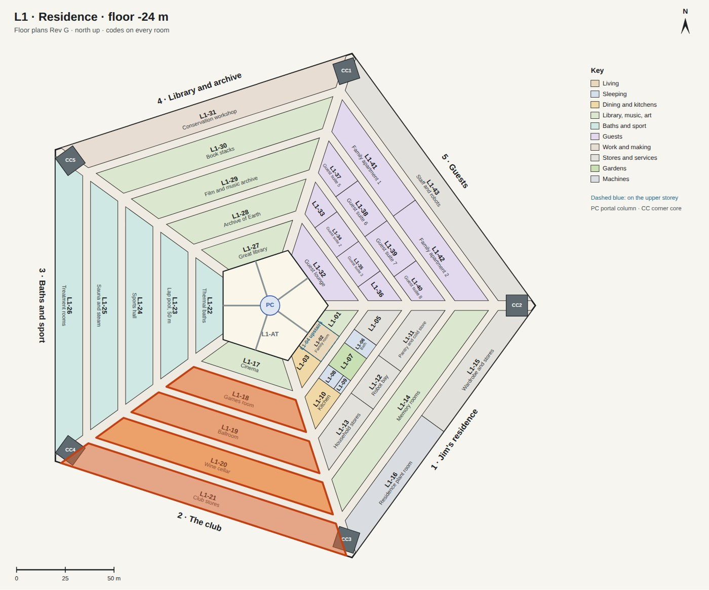
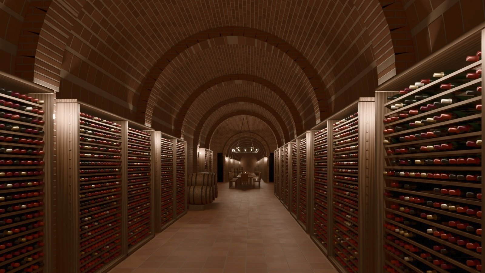
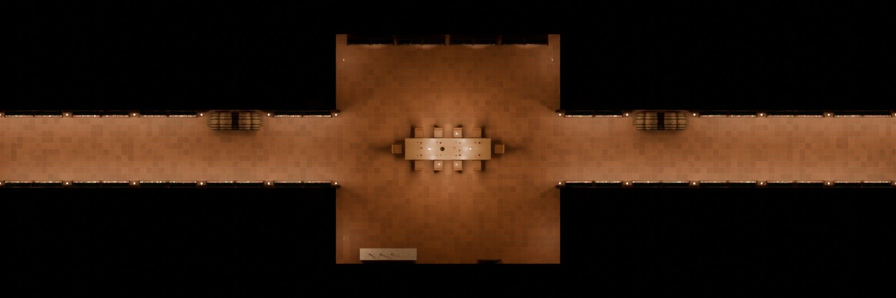
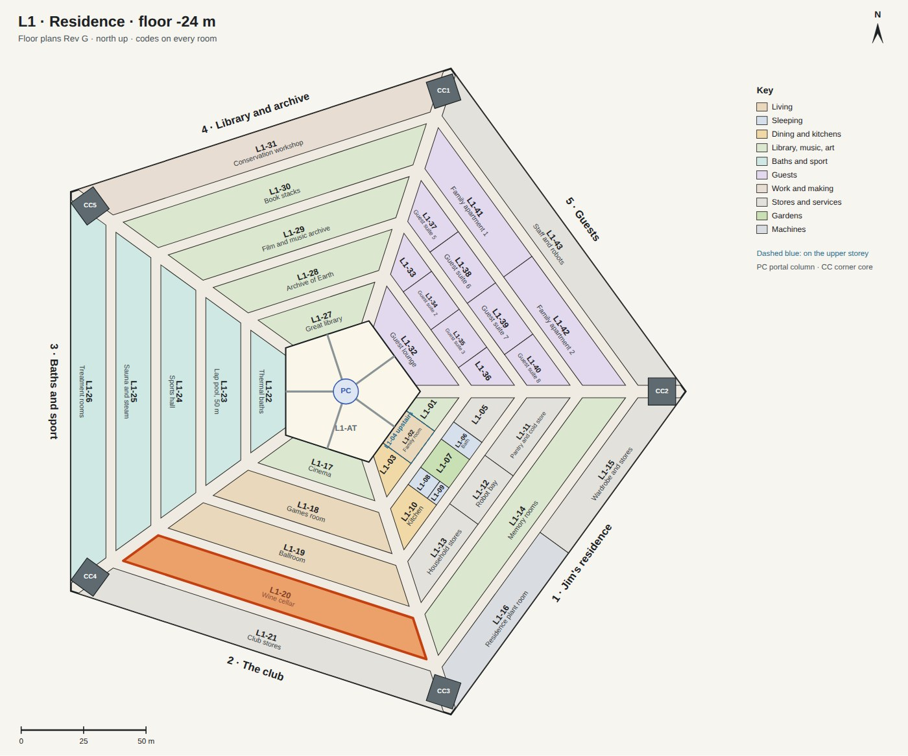

Design plan · 03 · 3
L1 · the club
Sector 2 of L1, behind the cinema: the rooms for evenings with guests. Across the first street, the games room; across the next, the ballroom, where visitors are welcomed every 26 months; then Arcadia's one wine cellar, cool and steady below ground; and the club's stores at the back.

The wine cellar
Arcadia's one cellar, the whole of ring D behind the ballroom: a tasting room under a brick vault in the middle, and from it two aisles running 44 m along the ring each way, the bottles in racks between brick ribs and oak casks in some bays. It sends wine up to the Crown's wine room (C-16) for the dinners.


| Size | 1,640 m²: ring D is 14 m deep and 107 to 128 m long. The tasting room 12 m square and 6.2 m high under its vault; the aisles 4.2 m wide and 4.6 m high. |
|---|---|
| Made of | Brick fired from Mars soil in the kilns that make the Pentagon's panels; a floor of terracotta tiles from the same kilns; racks and casks of oak; black iron. |
| In it | Racks for about 30,000 bottles; oak casks on cradles; an oak table for ten with a decanter, glasses and candles under an iron chandelier; a sommelier's counter by the door. |
| Keeps | 13 °C and 70% humidity, all year: below ground nothing changes from day to night or summer to winter. |
| Light | Warm and low: a sconce on every pier, lamps on top of the racks washing the vaults, the chandelier and the candles at the table. |
| Next to | The street in front, the ballroom (L1-19) across it; the club's stores (L1-21) behind. |
